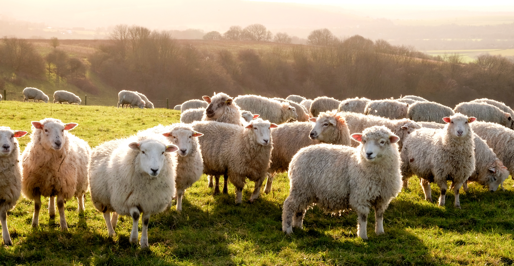
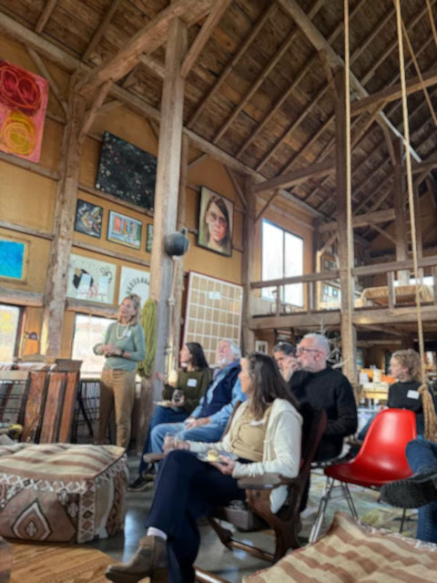
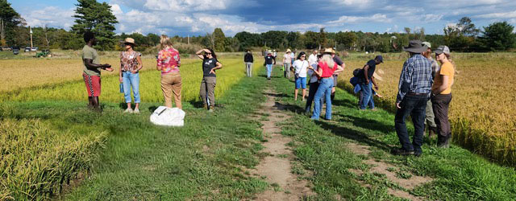
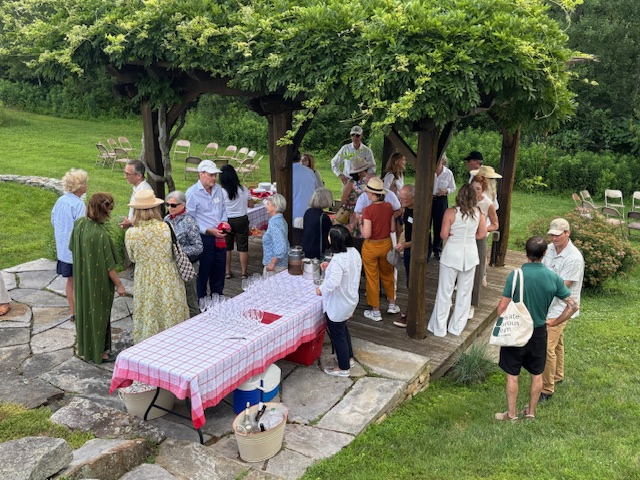

Events & Webinars
Connecting Hudson Valley farmland owners through expert-led digital sessions and in-person gatherings.
Upcoming Event
New
Meet Our Farmers Series · Part II
Livestock Farming in the Hudson Valley
An In-Person Convening at Hudson Hollow Farm
Date & Time
Saturday, May 16, 2026
2:00 – 5:00 PM
Location
The Barn at Hudson Hollow Farm
182 Schultz Hill Rd, Staatsburg, NY
Format
In Person
Featuring Wild Lea Farm
Livestock farming in the Hudson Valley, NY is heavily focused on sustainable, pasture-raised, and regenerative agriculture, producing high-quality grass-fed beef, dairy, pork, lamb, chickens as well as turkey, geese, quail and rabbits. Farms emphasize animal welfare and ecological restoration, sometimes offering related farm products, education and farm visits. This event will take place in the Barn at Hudson Hollow Farm and will feature several local farming operations, showcasing Wild Lea Farm's on site operations. We will hear directly from farmers about the pasture raised approach, combining different livestock in one system, processing challenges and landowner partnerships. Following conversations and Q&A, we will visit Wild Lea Farm's livestock, walk through fields to observe grazing impacts and enjoy refreshments in the Barn before departing.
This year, Hudson Valley Farmland Stewards' "Meet our Farmers" series of events is focused on connecting farmland owners with farmers to learn more about farming opportunities and challenges in the Hudson Valley and to develop a supportive dialogue that facilitates successful farming operations on leased land.
Space is limited — early registration recommended.
Network Meetings
Our network meets periodically across the Hudson Valley for community field days, farm tours, and peer-to-peer workshops focused on shared stewardship goals. Join the network to receive invitations to our next gathering.




Recorded Webinars
View Full YouTube PlaylistFarmland Stewardship Overview
An essential introduction for non-operating landowners in the Hudson Valley region.
Featuring
Tim Biello and Molly Johnston-Heck from AFT
Legal Perspectives
A deep dive into legal frameworks, leasing, and agreement structures for stewards.
Featuring
Jonathan Brown and Jack Hornickel from Pace University
Meet Our Farmers - Part I
Direct regional connections with Hudson Valley farmers implementing regenerative models.
Featuring
Megan Larmer from Glynwood
Max Morningstar from MX Morningstar